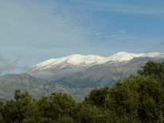
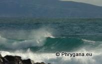
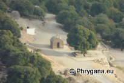
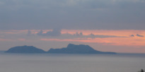

| PHRYGANA | Fauna | Flora | Galles | liste des espèces |
contact-
info-commentaires: phrygana1 (at) gmail.com |
| Particularités crétoises | nouveautés | Mines | ressources naturelles |
| la Crète en beautés |
|  |  |  |  | |
| le Psiloritis | le Golfe de la Messara | Églises & Monastères | les Paximadia | ciels et nuages |
| les enseignes |
| 07 janvier 2013 |
| © paul fontaine -- © Phrygana.eu 2007 -- 2013 |